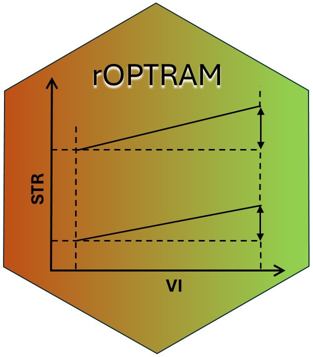

Introduction 
rOPTRAM implements The OPtical TRapezoid Model (OPTRAM)
to derive soil moisture based on the linear relation between a
vegetation index, i.e. NDVI, and Land Surface Temperature (LST). The
Short Wave Infra-red (SWIR) band is used as a proxy for LST. The SWIR
band is transformed to Swir Transformed Reflectance (STR).
A scatterplot of NDVI vs. STR is used to produce wet and dry linear regression lines, and the slope/intercept coefficients of these lines comprise the trapezoid. These coefficients are then used on a new satellite image to determine soil moisture.
See: Sadeghi et al. (2017), Burdun et al. (2020), Ambrosone et al. (2020)
Prerequisites
Only a small number of commonly used R packages are required to use {rOPTRAM}. This includes:
- base packages {tools} and {utils}
- spatial packages {sf} and {terra}
- data.frame and plotting {dplyr}, {ggplot2}
Also, to allow {rOPTRAM} to download Sentinel-2 images, clip to a study area, and prepare the necessary vegetation index and STR products, the R package {CDSE} (see Karaman (2023)) as well as {jsonlite} are required.
Workflows
Users can download Sentinel-2 tiles from the Copernicus manually, and run thru the steps one by one to produce the OPTRAM trapezoid, and predicted soil moisture maps. However, this approach is not optimal. The complete workflow can be initiated with a single function call to download, clip to area of interest, and produce the trapezoid coefficients. This all-inclusive approach is highly recommended since processing of the Sentinel-2 data is performed “in the cloud” and only the final products are downloaded, greatly reducing the download file sizes.
That recommended R package {CDSE} interfaces with the Copernicus DataSpace Ecosystem in one of two ways:
- Thru the Scihub API.
- Thru the openEO platform
Both methods require registering on the Copernicus DataSpace
remotes::install_github("ropensci/rOPTRAM")
library(rOPTRAM)
ls(getNamespace('rOPTRAM'))
# The {CDSE} and {jsonlite} packages are required for downloading Sentinel imagery from Copernicus DataSpace.
library("CDSE")
library("jsonlite")Package options
The {rOPTRAM} package is controlled by several options, set
automatically when the package first loads. These defaults can be viewed
by running the function optram_options() without
arguments:
optram_options()
#> [1] "edge_points = TRUE"
#> [1] "feature_col = ID"
#> [1] "max_cloud = 12"
#> [1] "max_tbl_size = 1e+06"
#> [1] "period = seasonal"
#> [1] "plot_colors = colors"
#> [1] "remote = scihub"
#> [1] "rm.hi.str = FALSE"
#> [1] "rm.low.vi = FALSE"
#> [1] "SWIR_band = 11"
#> [1] "trapezoid_method = linear"
#> [1] "veg_index = NDVI"
#> [1] "vi_step = 0.005"
#> NULLUsers can override any of the defaults by calling this function with
alternative values for the options. For example, Sentinel images are
downloaded, by default for all available image dates between the
specified from_date and to_date. Users can,
instead, choose to download images only for a specific season as
follows:
optram_options("period", "seasonal")
#> [1] "edge_points = TRUE"
#> [1] "feature_col = ID"
#> [1] "max_cloud = 12"
#> [1] "max_tbl_size = 1e+06"
#> [1] "period = seasonal"
#> [1] "plot_colors = colors"
#> [1] "remote = scihub"
#> [1] "rm.hi.str = FALSE"
#> [1] "rm.low.vi = FALSE"
#> [1] "SWIR_band = 11"
#> [1] "trapezoid_method = linear"
#> [1] "veg_index = NDVI"
#> [1] "vi_step = 0.005"Now, only images between the day/month of from_date and
day/month of to_date will be acquired, but for all years in
the date range.
Three trapezoid fitting functions are implemented in {rOPTRAM}. The default is “linear”, but users can change as follows:
optram_options("trapezoid_method", "polynomial")
#> [1] "edge_points = TRUE"
#> [1] "feature_col = ID"
#> [1] "max_cloud = 12"
#> [1] "max_tbl_size = 1e+06"
#> [1] "period = seasonal"
#> [1] "plot_colors = colors"
#> [1] "remote = scihub"
#> [1] "rm.hi.str = FALSE"
#> [1] "rm.low.vi = FALSE"
#> [1] "SWIR_band = 11"
#> [1] "trapezoid_method = polynomial"
#> [1] "veg_index = NDVI"
#> [1] "vi_step = 0.005"The default trapezoid plot shows a scatter plot cloud of vegetation index values vs SWIR Transformed Reflectance, where all points have a uniform color. This plot can be improved by coloring the points by their density within the scatterplot. This is accomplished by choosing to set the option “plot_colors” to “colors”:
optram_options("plot_colors", "colors")
#> [1] "edge_points = TRUE"
#> [1] "feature_col = ID"
#> [1] "max_cloud = 12"
#> [1] "max_tbl_size = 1e+06"
#> [1] "period = seasonal"
#> [1] "plot_colors = colors"
#> [1] "remote = scihub"
#> [1] "rm.hi.str = FALSE"
#> [1] "rm.low.vi = FALSE"
#> [1] "SWIR_band = 11"
#> [1] "trapezoid_method = polynomial"
#> [1] "veg_index = NDVI"
#> [1] "vi_step = 0.005"Main wrapper function
Run the full OPTRAM model procedure with a single function call
Registration on Copernicus DataSpace was done in advance, and the OAuth credentials (clientid, and secret) have been saved to the user’s home directory.
Downloaded Sentinel-2 images are saved to S2_output_dir.
For this example, outputs are saved to tempdir()
from_date <- "2022-05-01"
to_date <- "2023-04-30"
output_dir <- tempdir()
aoi <- sf::st_read(system.file("extdata",
"lachish.gpkg", package = "rOPTRAM"))
optram_options("veg_index", "NDVI")
optram_options("trapezoid_method", "linear")
rmse <- optram(aoi,
from_date, to_date,
S2_output_dir = output_dir,
data_output_dir = output_dir)
#> [1] "RMSE for fitted trapezoid:"
#> RMSE.wet RMSE.dry
#> 1 0.2747341 0.1407656
knitr::kable(rmse, caption = "Trapezoid coefficients")| RMSE.wet | RMSE.dry |
|---|---|
| 0.2747341 | 0.1407656 |
Show trapezoid plot
edges_df <- read.csv(file.path(output_dir, "trapezoid_edges_lin.csv"))
df_file <- file.path(output_dir, "VI_STR_data.rds")
full_df <- readRDS(df_file)
pl <- plot_vi_str_cloud(full_df, edges_df)
pl <- pl + ggplot2::ggtitle("Lachish area trapezoid plot",
subtitle = "linear fitted")
ggplot2::ggsave(file.path(output_dir, "trapezoid_lachish_linear.png"),
width = 18, height = 12, units = "cm")
knitr::include_graphics("images/trapezoid_lachish_linear.png")
Step by step
The same procedure as the wrapper function, but in explicit steps
- Acquire Sentinel 2 images within a date range, and crop to AOI;
- Prepare the SWIR Transformed Reflectance;
- Prepare a data.frame of Vegetation Index and STR values;
- Activate the options to remove VI values below zero
- and the option to remove outlier STR values
- Get trapezoid coefficients from the scatterplot of VI-STR pixels
# Using the same dates, and aoi as previous example
s2_file_list <- optram_acquire_s2(aoi,
from_date, to_date,
output_dir = output_dir)
STR_list <- list.files(file.path(output_dir, "STR"),
pattern = ".tif$", full.names = TRUE)
VI_list <- list.files(file.path(output_dir, "NDVI"),
pattern = ".tif$", full.names = TRUE)
full_df <- optram_ndvi_str(STR_list, VI_list,
output_dir = output_dir)
rmse <- optram_wetdry_coefficients(full_df,
output_dir = output_dir)
knitr::kable(rmse, caption = "RMSE of fitted trapezoid edges")| RMSE.wet | RMSE.dry |
|---|---|
| 0.2823248 | 0.1338994 |
Soil Moisture Estimate
Use trapezoid coefficients, VI, and STR rasters to derive soil moisture grid
img_date <- "2023-01-10" # After a rain
VI_dir <- file.path(output_dir, "NDVI")
STR_dir <- file.path(output_dir, "STR")
data_dir <- output_dir
SM <- optram_calculate_soil_moisture(img_date, VI_dir, STR_dir,
data_dir = data_dir)Soil moisture plot
library("viridis")
library("terra")
names(SM) <- "Lachish soil moisture"
SM[terra::values(SM) < 0] <- 0
terra::plot(SM, col = rev(viridis::viridis(25)), smooth = TRUE,
main = "Soil moisture map")
knitr::include_graphics("images/sm-plot.png")